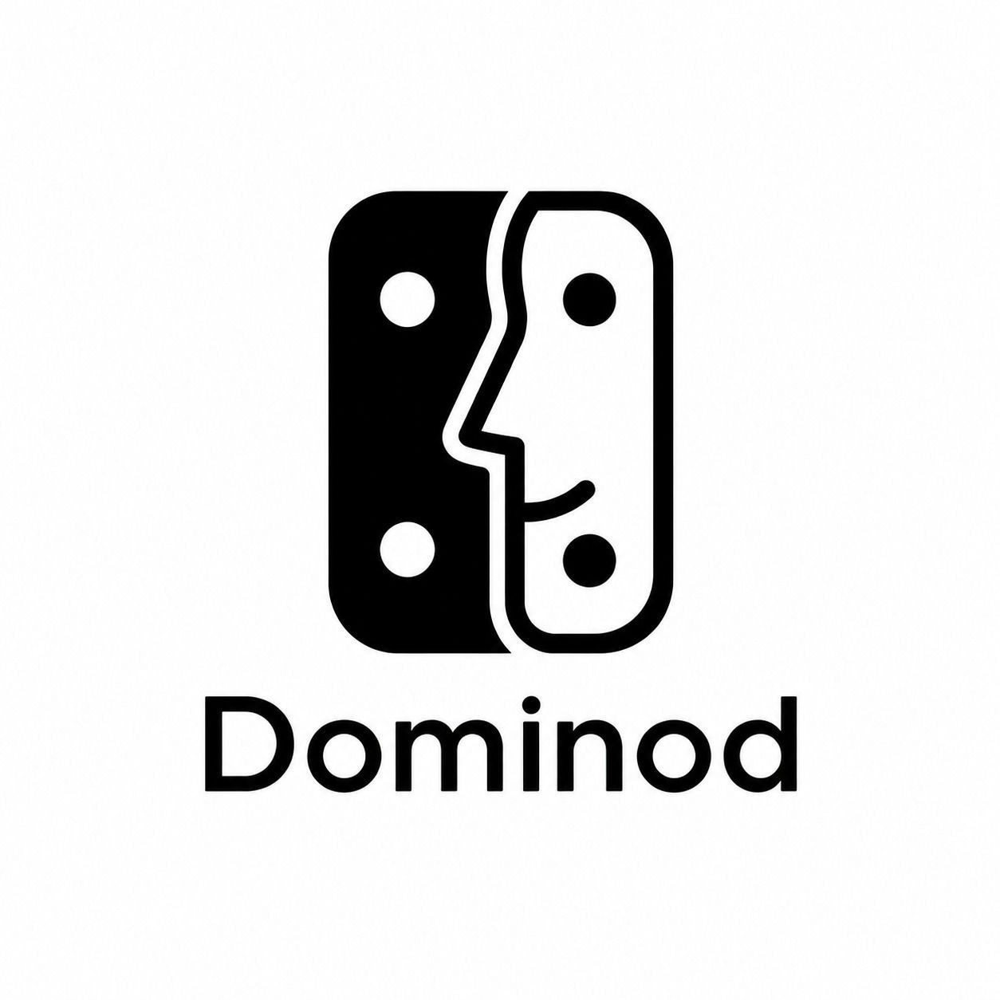

Projeto 1: Dominod
Jogo de dominó acessível para pessoas tetaplegicas.

Jogo de dominó acessível para pessoas tetaplegicas.

Jogo de investigação onde um ex-paciente de um asilo psiquiátrico matou seu doutor Você é um detetive e tem que resolver puzzles para poder obter a chave para o telhado e prender o assasino.
Link do jogo